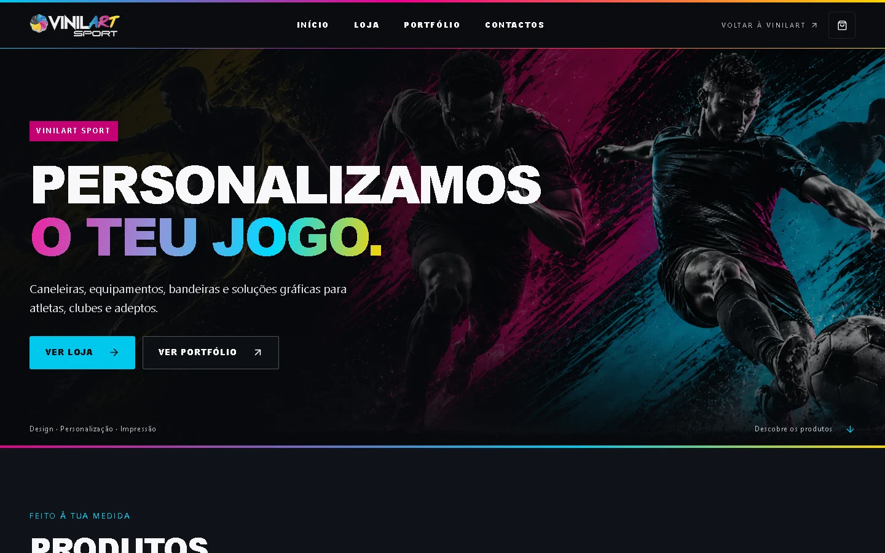
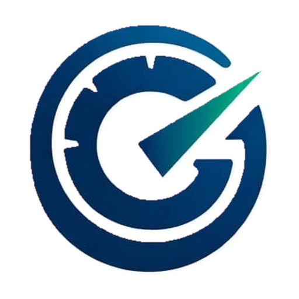
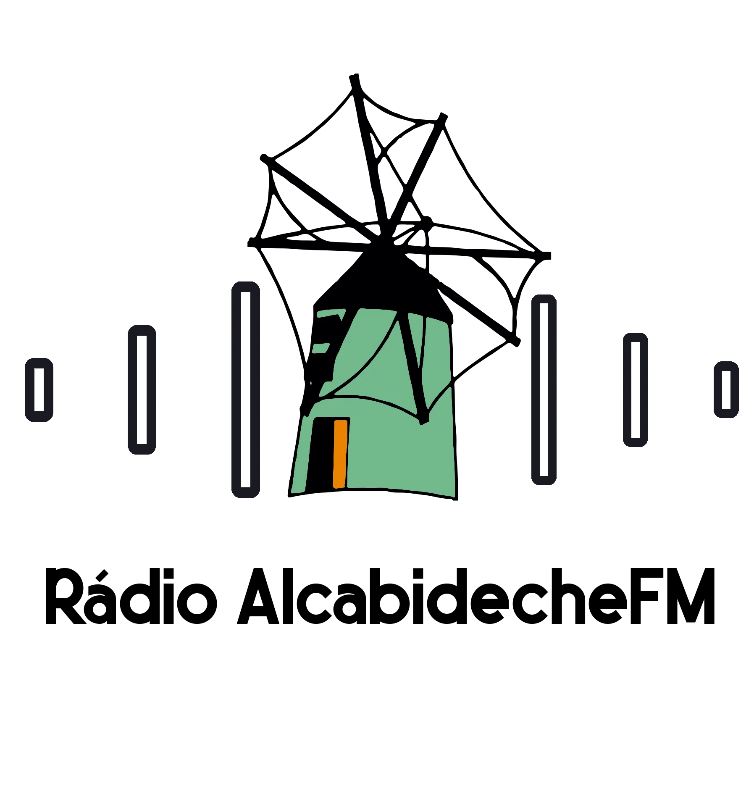

01 / E-COMMERCE↗

O melhor argumento é mostrar o que fizemos. Explora projetos de e-commerce, empresas e comunidade, cada um com a sua personalidade.
2026 / PROJETOS REAIS


↗Imagem da marca
↗Imagem da marcaProjetos com objetivos diferentes merecem soluções diferentes. O teu pode ser o próximo.
Vamos falar ↗Uma ideia pequena ou um projeto ambicioso. O primeiro passo é uma boa conversa.
Pedir uma proposta ↗